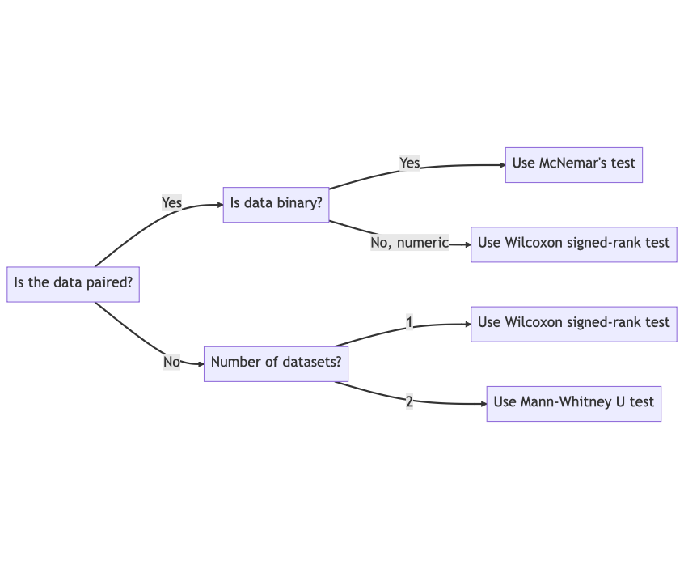

ISYE 6501 Intro to Analytics Modeling Notes
Table of Contents
- 1. Module 16: Advanced Models
- 1.1. M16L01: Non-parametric methods
- 1.2. M16L01a: Matching tests for situations
- 1.3. M16L02: Bayesian modeling
- 1.4. M16L03: Communities in graphs
- 1.5. M16L04: Neural networks and deep learning
- 1.6. M16L05: Competitive models
- 1.7. M16L05a: Competitive model demo
- 1.8. M16L06: Natural language processing
- 1.9. M16L07: Survival models
- 1.10. M16L08: Gradient boosting
- 1.11. M16L08a: Gradient boosting example
1. Module 16: Advanced Models
Midterm 2: modules 11-16 (from variable selection to optimization and advanced models) – weeks 8-12
1.1. M16L01: Non-parametric methods
In this text, Joel Sokol, Director of the Master of Science and Analytics degree at Georgia Tech, explains three non-parametric statistical tests: McNamara's Test, Wilcoxon signed rank test, and Mann-Whitney test.
These tests are not advanced analytics methods, but they are not usually covered in basic statistics prerequisites.
McNamara's test is used to compare two competing treatments when they are tested on different patients, and there is no underlying distribution.
Wilcoxon signed rank test is used when we have no assumptions about what the response function is mathematically, and we only assume that it is continuous and symmetric. The test answers whether the median of the distribution is different from a specific value M.
Mann-Whitney test is used to compare two samples where the outcomes are not paired, and we assume that all the observations are independent of each other.
1.1.1. Non-parametric tests: Statistics tests when the distribution is unknown
1.1.2. McNemar's test is paired
- Compare results on pairs of responses
- eg: two different treatments for a virus
- Treatment A or B better?
- Are the observations just luck?
- Analysis is using p-value similar to a 'normal' hypothesis test
1.1.3. Wilcoxon Signed Rank Test for Medians
- Assumption:
- Distribution is continuous
- Distribution is symmetric
- Question:
- Is the median of the distribution different from a value \(m\)?
- Procedure
- With responses y1 to yn
- Rank |y1-ym|, …., |yn-ym| from smallest to largest
- \(W = \sum_{y_i>m}\text{rank}(y_i-m)\) is the sum of all ranks where yi > m
- p-value test for \(W\)
- Question
- Given pairs (y1, z1), …, (yn, zn) from observations y and z
- Use |y1-z1|, …, |yn-zn| for rank test
- Comparison
- For numeric data, use the Wilcoxon test
- For binary data, use McNemar's test
1.1.4. Mann-Whitney test
- Use when there are two datasets but no paired samples
- Procedure
- Given independent observations y1, …, yn and z1, …, zm
- Rank all observations
- U = smaller of two adjusted rank sums \[ U = min(U_y, U_z) \\ U_y = \sum^n_{i=1}\text{rank}(y_i)-\frac{n(n+1)}{2} \\ U_z = \sum^m_{j=1}\text{rank}(z_j)-\frac{m(m+1)}{2} \]
- Find significance with software or a statistical table
1.1.5. Summary from video

- Use non-parametric tests when you know nothing about distribution
- # datasets = 2
- Paired Yes/No
- use McNemar's test
- Paired Numeric
- use Wilcoxon signed rank test
- Unpaired doubles
- use Mann-Whitney test
- # datasets = 1
- Compare possible median
- use Wilcoxon signed rank test
1.2. M16L01a: Matching tests for situations
1.2.1. Summary
This lesson discusses how to choose the appropriate statistical test for different types of situations.
The different types of tests include parametric tests, non-parametric tests related to the median, and a specific type of non-parametric test that tracks successes and failures.
The lesson also covers two aspects of choosing the right statistical test: determining whether to use a one or two sample test, and deciding which type of test to use depending on the type of data involved.
Finally, the lesson provides an example to illustrate how to choose the appropriate test in a given situation.
- Which type of test would you use if you are analyzing the mean of a single data set? A. One sample parametric test B. Two sample parametric test C. One sample non-parametric test D. Paired binomial-based test
- When comparing two data sets, which test would you use if the data sets are not inherently paired? A. Paired parametric test B. Unpaired parametric test C. Paired non-parametric test D. Unpaired binomial-based test
- If you are analyzing the median of two data sets, which type of test should you use? A. Parametric test B. Non-parametric test C. Binomial-based test D. Paired test
- In a situation where you are analyzing binary outcomes such as successes or failures, which type of test should you use? A. Parametric test B. Non-parametric test C. Binomial-based test D. Paired test
*
1.3. M16L02: Bayesian modeling
The passage introduces Bayesian models and their usage in analytics. It explains the basics of Bayes rule, which is a rule of conditional probability, and provides an example of using Bayes theorem to calculate the probability of having a disease given a positive test. The passage also describes empirical Bayes modeling, which is commonly used when there is little data available for a specific case. An example of using empirical Bayes modeling to estimate the strength difference between two basketball teams is provided, which shows how the model can make a prediction based on a single observation and a broader set of relevant observations. The passage emphasizes that understanding the intuition behind Bayesian models is crucial in explaining them to decision-makers who may not have a mathematical background.
- What is the purpose of the examples given in the passage? A. To show that Bayesian models are more difficult than other models. B. To demonstrate how counter-intuitive results can arise from Bayesian models. C. To explain how to calculate the probability of having a disease given a positive test. D. To provide examples of how to estimate the strength difference between basketball teams.
- What is Bayes rule or Bayes theorem? A. A rule of conditional probability. B. A way to estimate the strength difference between basketball teams. C. A formula to calculate the probability of having a disease given a positive test. D. A model that predicts outcomes of the NCAA basketball tournament.
- What is empirical Bayes modeling commonly used for? A. When there is a lot of data available for a specific case. B. When the overall distribution of something is not known or estimated. C. When there is little data available for a specific case. D. When there is only one observation available for a specific case.
- What is the main takeaway from the passage? A. Bayesian models are more complicated than other models. B. Bayesian models can only be understood by decision-makers with a mathematical background. C. Bayesian models can be very helpful, especially in the absence of lots of data. D. Bayesian models are not useful for making predictions based on a single observation.
1.4. M16L03: Communities in graphs
The lesson introduces a model called the Louvain algorithm for finding highly interconnected subpopulations in large interconnected populations, such as social media networks, disease outbreaks, computer viruses, language spread, and terrorist networks.
The lesson explains the standard terminology used in graph theory, including nodes, edges, cliques, and communities. The Louvain algorithm maximizes the modularity of a graph, a measure of how well the graph is separated into communities that are highly connected internally but not much between each other.
The algorithm has a few mostly repeated steps, including creating super-nodes and super-arcs between communities. Although the Louvain algorithm is a heuristic and not guaranteed to find the best partition of a graph, it often provides good solutions quickly and is useful for finding communities in large networks.
- What is the Louvain algorithm used for? A. Solving mathematically hard problems B. Finding highly interconnected subpopulations in large interconnected populations C. Separating a graph into communities that are highly connected between each other D. Maximizing the weight of arcs in a graph
- What is a clique in graph theory? A. A small group of people who stick together and exclude others B. A set of nodes that all have edges between each other C. The total weight of all the arcs connected to a node D. A measure of how well a graph is separated into communities
- What is the modularity of a graph? A. A measure of how well a graph is separated into communities that are highly connected internally but not much between each other B. The total weight of all the arcs in a graph C. The weight of an arc between two nodes in a graph D. The weight of a node in a graph
- Is the Louvain algorithm guaranteed to find the absolute best partition of a graph into communities? A. Yes, it always finds the absolute best partition of a graph into communities. B. No, it's not guaranteed to find the absolute best partition of a graph into communities because it's a heuristic. C. It depends on the size of the graph. D. It depends on the number of nodes in each community.
1.5. M16L04: Neural networks and deep learning
The lesson introduces two analytics models: neural networks and deep learning, which are often used for recognizing patterns that are difficult to specify using rules or algorithms.
Neural networks are modeled after the way neurons work in the brain, with input neurons, hidden neurons, and output neurons. The weights of the inputs are adjusted based on how wrong the outputs are, using algorithms like gradient descent.
Training neural networks is difficult, as they require a lot of training data, and it's hard to choose and tune the learning algorithm.
Deep learning is a similar approach to neural networks but with more layers, which has had success in natural language processing, speech recognition, and image recognition.
Although deep learning is a hot research topic, it's often used for processing text and language, and it's covered in an elective course.
- Why are neural networks and deep learning used? A. To specify patterns using rules or algorithms B. To react to patterns that we don't understand C. To separate input and output neurons D. To adjust the weights of the inputs based on the output
- What is the input level in an artificial neural network? A. The output level on one side B. The hidden level in the middle C. The level where external inputs come into each input neuron D. The level where simulated neurons calculate a weighted value of the inputs
- What is the difference between neural networks and deep learning? A. Neural networks have more layers than deep learning B. Deep learning is a better approach than neural networks C. Neural networks are used for speech recognition and image recognition, while deep learning is used for natural language processing D. Deep learning has more layers than neural networks and is often a better approach
- Why is it difficult to make a neural network model generalizable? A. It requires a lot of training data B. It's often hard to choose and tune the learning algorithm C. It's harder compared to many other model types D. All of the above
1.6. M16L05: Competitive models
1.6.1. Summary
In this lesson, the topic of discussion is competitive decision-making, where analytics models consider all sides of a system in a situation involving competition and cooperation.
The models are used to determine the best action to take, assuming the process will change intelligently. The concept of game theory and its basic concepts are also introduced, along with a demo showcasing how the model works.
Different types of games and strategies, perfect and imperfect information, and zero-sum and non-zero-sum games are also discussed.
Lastly, the lesson covers the use of different optimization models to find the best decisions in competitive situations.
- What is the main concept discussed in the lesson? A) Deep learning B) Competitive decision-making C) Predictive models D) Descriptive models
- What is the purpose of using analytics models in competitive decision-making? A) To consider all sides of the system B) To find hidden relationships in the data C) To optimize a process that won't change D) To predict what's going to happen in the future
- What is the term used for a situation involving competition and cooperation? A) Sequential game B) Non-zero-sum game C) Zero-sum game D) Cooperative game theory
- What is the purpose of using optimization models in competitive situations? A) To find the best or optimal strategy B) To determine the best thing to do assuming the process won't change C) To find hidden relationships in the data D) To tease out an understanding of reality hidden in the data.
1.7. M16L05a: Competitive model demo
1.7.1. Summary
In this lesson, the concept of competitive decision-making using game theory is introduced. Game theory is used in situations where the outcome of a decision depends on the decisions of others.
The lesson explains the basics of game theory using the example of two gas stations competing for customers. The gas stations can set their prices to $2.50 or $2. If they both set the same price, they will split the demand half and half.
The lesson shows how the gas stations will arrive at a stable equilibrium with both choosing the lower price point. The lesson also explains that in some situations, competition can drive down prices or incentivize companies to differentiate their products to give consumers more choices.
- What is the main topic of this lesson? A. How to set prices for a new product B. How to predict the future using data analytics C. Competitive decision-making using game theory D. The benefits of product differentiation for consumers
- What is game theory used for? A. Situations where the outcome of a decision depends on the decisions of others B. Finding hidden relationships in data C. Determining the best thing to do using data D. Identifying trends in data to predict the future
- What is the stable equilibrium in the gas station example? A. Both gas stations charging $2.50 B. Both gas stations charging $2 C. BP charging $2 and Shell charging $2.50 D. BP charging $2.50 and Shell charging $2
- What can competition do in some situations? A. Drive down prices or incentivize companies to differentiate their products B. Force companies to set their prices higher C. Increase the demand for products D. Result in higher profits for companies
1.8. M16L06: Natural language processing
1.8.1. Summary
In this lesson, Joel Sokol explains how natural language processing (NLP) is a type of data that requires different modeling techniques.
NLP models can help machines to recognize and understand human language, which can be useful in various fields such as healthcare, technical support, and legal document searching.
NLP includes several tasks such as speech to text, identifying the speaker's words and meaning, co-reference, grammatical tagging, sentiment analysis, and message construction.
While NLP is an important and growing application of analytics and data science, it can still be challenging due to the complexities of language, including idioms, metaphors, and multiple word definitions. The lesson concludes with a humorous anecdote about a call center operator with a voice that sounded like a machine, demonstrating that even humans can struggle with language understanding.
- What is natural language processing? A) A type of data that requires different modeling techniques B) A process of analyzing structured data C) A method of machine learning D) A type of data that is easy to model
- What are some fields where natural language processing can be useful? A) Education and childcare B) Agriculture and forestry C) Healthcare and technical support D) Transportation and logistics
- What are some tasks included in natural language processing? A) Identifying colors and shapes B) Recognizing facial expressions C) Speech to text and sentiment analysis D) Tracking eye movements and blink rates
- What is the main challenge of natural language processing? A) The complexities of language, including idioms and metaphors B) The lack of available data C) The need for expensive hardware D) The slow processing speed
1.9. M16L07: Survival models
1.9.1. Summary
This lesson introduces survival models, which are used to predict the probability of an event happening or not happening before a certain time.
These models are used in various applications, such as insurance, medical research, and machinery. The Cox proportional hazards model is also introduced, which estimates survival probability based on predictor variables.
- What are survival models used for? a) To predict the weather b) To predict the probability of an event happening or not happening before a certain time c) To predict the stock market d) To predict lottery numbers
- What is an example of medical research where survival models are used? a) Predicting the price of medicine b) Predicting the number of patients in a hospital c) Predicting the probability of a transplant patient living for at least 10 more years after receiving an organ d) Predicting the number of times a doctor will sneeze in a day
- What is the Cox proportional hazards model? a) A model used to predict the weather b) A model used to predict stock market prices c) A model used to estimate survival probability based on predictor variables d) A model used to estimate the number of people in a city
- What is censored data? a) Data that is censored on social media b) Data that is lost c) Data that is hidden from view d) Data where we either don't have data before or after a specific time, or where we only have data until we've observed enough events.
1.10. M16L08: Gradient boosting
1.10.1. Summary
The lesson introduces the concept of gradient boosting, which is a way to improve the performance of a predictive model by adding other models to it.
Gradient boosting uses the gradient information to fit those models. The basic idea of gradient boosting is to start with a single predictive model, and then find another function that can be added to it to improve its performance.
The function that is added is trained to fit the errors in the predictions of the first model. The process is repeated until there is no significant improvement in performance or until a specific stopping criterion is reached.
Gradient boosting can be used with factor-based models, regression, classification, and tree-based models based on those.
- What is gradient boosting? A) A type of predictive model B) A way to improve the performance of a predictive model by adding other models to it C) A way to fit a single model to a large dataset D) A way to visualize the results of a predictive model
- What is the boosting part of the name gradient boosting? A) The process of adding models together B) The process of finding the gradient information C) The process of fitting errors in the predictions D) The process of using tree-based models
- What is the gradient part of the name gradient boosting? A) The process of adding models together B) The process of finding the gradient information C) The process of fitting errors in the predictions D) The process of using tree-based models
- What is the basic idea of gradient boosting? A) To fit a single model to a large dataset B) To start with a single predictive model and add other models to improve its performance C) To use gradient information to fit models D) To use tree-based models
1.11. M16L08a: Gradient boosting example
1.11.1. Summary
The lesson explains how gradient boosting works as a way to augment the performance of factor-based models.
It involves starting with a single model and then adding other models to it that are trained to fit the errors in the initial model's predictions. The process is repeated until there isn't much improvement or until time runs out.
The lesson provides a simple example of one iteration of the process using a small dataset and regression trees.
- Which of the following is true about gradient boosting? A) It involves starting with many models and then combining them into a single model. B) It is a modeling technique that can only be applied to tree-based models. C) It works by adding other models to an initial model to improve its performance. D) It involves training a single model to fit the errors in the initial model's predictions.
- What is the loss function used in the example in this lesson? A) Sum of squared errors B) Mean squared error C) Absolute error D) Log loss
- What is the formula for calculating the negative gradient of the loss function? A) The partial derivative of the loss function with respect to the predicted response B) The partial derivative of the predicted response with respect to the predictors C) The negative of the partial derivative of the loss function with respect to the predicted response D) The negative of the partial derivative of the predicted response with respect to the predictors
- What is the optimal multiplier value used to update F in the example in this lesson? A) 0.25 B) 0.50 C) 0.56 D) 0.75